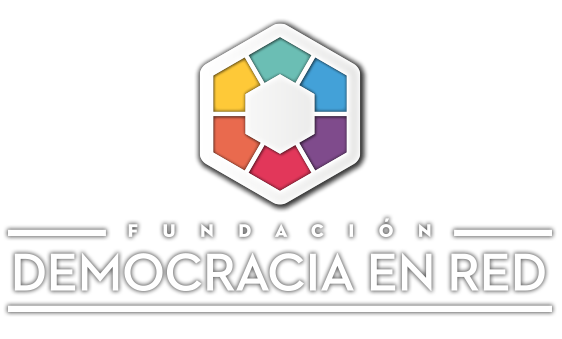
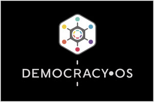
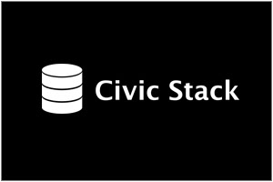
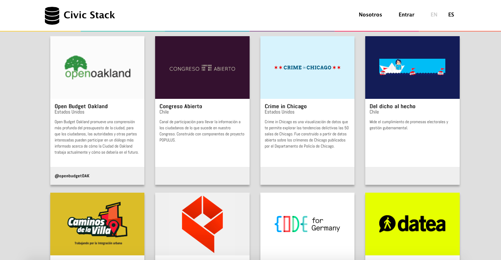
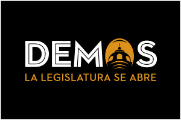
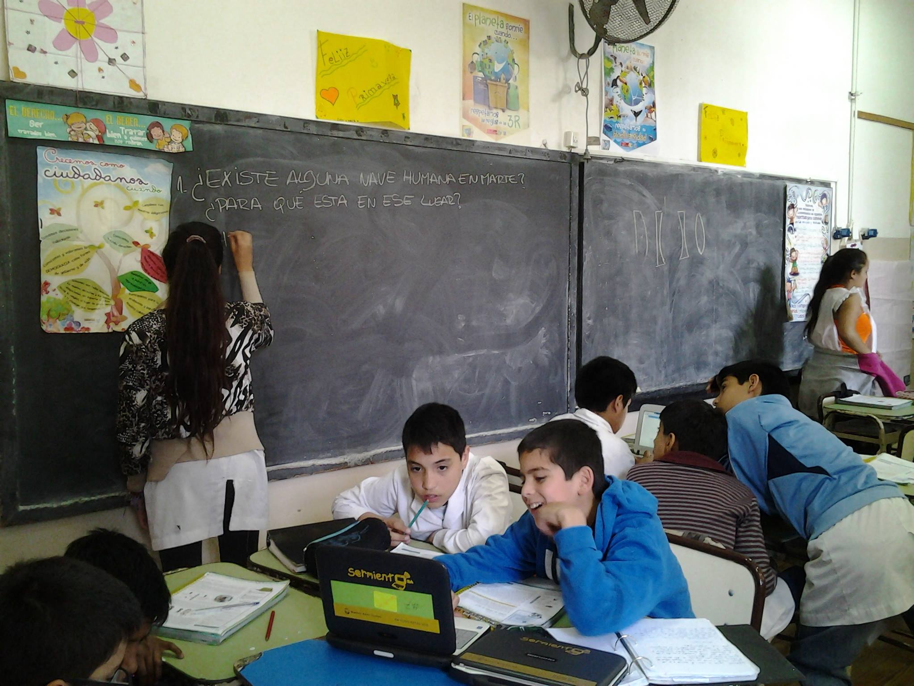
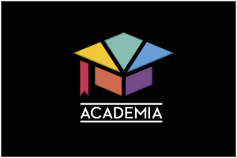
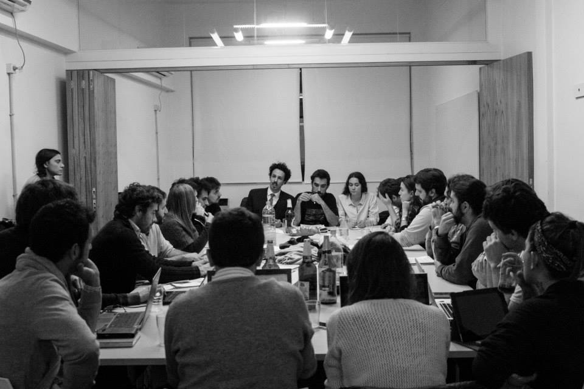
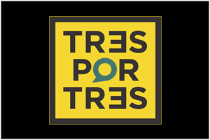
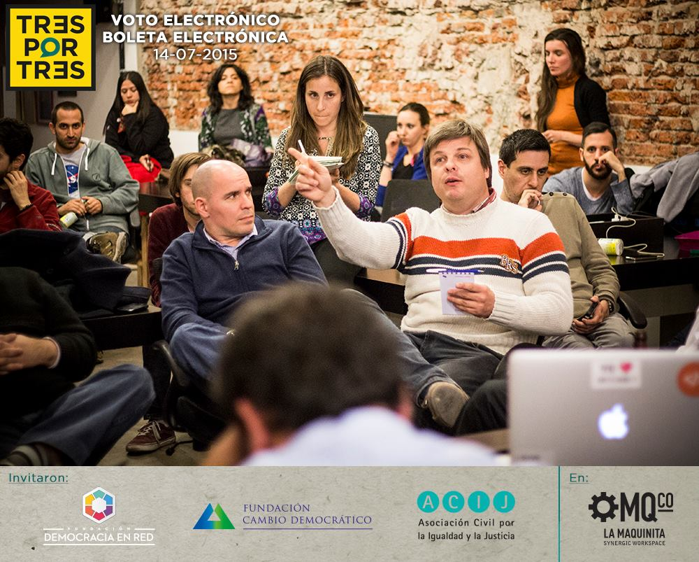

<!DOCTYPE html><html lang="en"><head><meta charset="utf-8"><title>Democracia en Red Foundation</title><meta content="Internet is changing the political system. We develop strategies to upgrade the democratic system to the XXIst Century." name="description"><meta content="Pía Mancini @piamancini" name="author"><meta content="Ricardo Rauch @gravityonmars" name="author"><meta content="HAkIFHrAksbGkWhFocPXjNqA6JDUjF3V2dA0SLKBIYc" name="google-site-verification"><meta content="width=device-width, user-scalable=no, initial-scale=1.0, minimum-scale=1.0, maximum-scale=1.0" name="viewport"><meta property="og:title" content="Democracia en Red Foundation"><meta property="og:description" content="Internet is changing the political system. We develop strategies to upgrade the democratic system to the XXIst Century."><meta property="og:type" content="website"><meta property="og:image" content="logo-card.png"><meta property="og:url" content="http://democraciaenred.org"><meta name="twitter:card" content="summary"><meta name="twitter:site" content="@fundacionder"><meta name="twitter:title" content="Democracia en Red Foundation"><meta name="twitter:description" content="Internet is changing the political system. We develop strategies to upgrade the democratic system to the XXIst Century."><meta name="twitter:image" content="logo-card.png"><link href="http://netdna.bootstrapcdn.com/twitter-bootstrap/2.3.2/css/bootstrap-combined.min.css" rel="stylesheet"><link href="stylesheets/fonts/social.css" rel="stylesheet"><link href="stylesheets/app.css" rel="stylesheet"><link href="images/der-favicon.ico" rel="shortcut icon"><script src="http://ajax.googleapis.com/ajax/libs/jquery/1.8.1/jquery.min.js" type="text/javascript"></script><script src="javascripts/vendor/jquery.scrollTo.min.js" type="text/javascript"></script><script src="http://netdna.bootstrapcdn.com/twitter-bootstrap/2.3.2/js/bootstrap.min.js" type="text/javascript"></script><link href="http://fonts.googleapis.com/css?family=Open+Sans:400,700,800" rel="stylesheet" type="text/css"></head></html><body data-offset="120" data-spy="scroll" data-target=".navbar"><header class="site-header clearfix"><div class="navbar navbar-inverse navbar-fixed-top"><div class="navbar-inner"><div class="container"><h1><a href="#splash" title="Democracia en Red">Democracia en Red</a></h1><ul class="nav languages"><li class="selected"><a href="/index-en.html" title="">EN</a></li><li><a href="/index.html" title="">ES</a></li></ul><div class="social"></div><ul class="nav nav-collapse collapse"><li class="hide active"><a href="#splash" title="">Somos Red</a></li><li><a href="#proyectos" title="">Projects</a></li><li><a href="#quienes-somos" title="">Who we are</a></li><li><a href="#press" title="">Press</a></li><li><a href="#collaborate" title="">Collaborate</a></li></ul></div></div></div></header><section id="splash" class="splash section"><div class="section-title"><div class="section-content"><p></p><div class="splash-title"><p class="description">Internet is changing the political system.</p><p class="description">We develop strategies to upgrade the democratic system to the XXIst Century.</p></div></div></div><a href="#argentina" class="arrow-down"></a></section><section id="argentina" class="argentina section"><div class="argentina-content clearfix"><div class="video-buenos-aires"><iframe src="https://embed-ssl.ted.com/talks/lang/es/pia_mancini_how_to_upgrade_democracy_for_the_internet_era.html" width="560px" height="315px" frameborder="0" scrolling="no" webkitAllowFullScreen mozallowfullscreen allowFullScreen></iframe></div></div></section><section id="proyectos" class="proyectos section"><div class="section-title"><h2>Projects</h2></div><div class="projects"><div data-description="DemocracyOS is an open-source web application designed to improve the chances of citizen to participate in decision-making processes. This is the technological manifestation of our main mision: to bring the political system closer to those behaviors and technologies of this century." class="project-card"><a href="#" class="expand"></a><div class="description-overlay"><button class="close">×</button><div class="screenshots"></div><div class="text"><div class="title"><h4></h4></div><p>DemocracyOS is an open-source web application designed to improve the chances of citizen to participate in decision-making processes. This is the technological manifestation of our main mision: to bring the political system closer to those behaviors and technologies of this century.</p><div class="links"><a href="http://democracyos.org/" target="_blank" class="btn">democracyos.org</a></div></div></div></div><div data-description="Civic stack is a showcase for open-source civic tech. It has been designed collaboratively as a window to show together all these technologies that are meant to empower citizens." class="project-card"><a href="#" class="expand"></a><div class="description-overlay"><button class="close">×</button><div class="screenshots"></div><div class="text"><div class="title"><h4></h4></div><p>Civic stack is a showcase for open-source civic tech. It has been designed collaboratively as a window to show together all these technologies that are meant to empower citizens.</p><div class="links"><a href="http://www.civicstack.org" target="_blank" class="btn">civicstack.org</a></div></div></div></div><div data-description="Demos is a project that seeks openess in political institutions. The experience allows every citizen to get informed, debate and vote on pieces of proposed legislation. An institutional bet on the idea of collective intelligence." class="project-card"><a href="#" class="expand"></a><div class="description-overlay"><button class="close">×</button><div class="screenshots"></div><div class="text"><div class="title"><h4></h4></div><p>Demos is a project that seeks openess in political institutions. The experience allows every citizen to get informed, debate and vote on pieces of proposed legislation. An institutional bet on the idea of collective intelligence.</p><div class="links"><a href="http://demos.legislatura.gov.ar" target="_blank" class="btn">Legislatura CABA</a><a href="http://bahiablanca.democracyos.org" target="_blank" class="btn">Bahía Blanca</a></div></div></div></div><div data-description="SOLE crafts self-organized learning environments, based on the pedagogy of Sugata Mitra. It involves many children, a few computers and one big question. The Internet transforms the way we learn, also in the schools of Buenos Aires." class="project-card"><a href="#" class="expand"></a><div class="description-overlay"><button class="close">×</button><div class="screenshots"></div><div class="text"><div class="title"><h4></h4></div><p>SOLE crafts self-organized learning environments, based on the pedagogy of Sugata Mitra. It involves many children, a few computers and one big question. The Internet transforms the way we learn, also in the schools of Buenos Aires.</p><div class="links"><a href="http://www.soleargentina.org" target="_blank" class="btn">soleargentina.org</a></div></div></div></div><div data-description="Academia is a space where artists, researchers and those who have been experimenting and thinking the intersection between technology and power come together. Democracy in the Internet Era brings new questions and surprising scenarios. We explore them." class="project-card"><a href="#" class="expand"></a><div class="description-overlay"><button class="close">×</button><div class="screenshots"></div><div class="text"><div class="title"><h4></h4></div><p>Academia is a space where artists, researchers and those who have been experimenting and thinking the intersection between technology and power come together. Democracy in the Internet Era brings new questions and surprising scenarios. We explore them.</p><div class="links"></div></div></div></div><div data-description="Tres Por Tres (3 ON 3) is a series of conversations held by many people on specific subjects like electronic voting, candidate’s promises of openness and digital divide. Three organizations host three events to discuss, without speakers or lecterns, the impact of technology in Argentine politics." class="project-card"><a href="#" class="expand"></a><div class="description-overlay"><button class="close">×</button><div class="screenshots"></div><div class="text"><div class="title"><h4></h4></div><p>Tres Por Tres (3 ON 3) is a series of conversations held by many people on specific subjects like electronic voting, candidate’s promises of openness and digital divide. Three organizations host three events to discuss, without speakers or lecterns, the impact of technology in Argentine politics.</p><div class="links"></div></div></div></div></div></section><section class="section book"><div class="section-title"><h2>¿Qué democracia para el siglo XXI?</h2></div><div class="content"><span class="description"><p class="description">Activistas y organizaciones de toda América Latina nos preguntamos: ¿qué democracia podemos construir en nuestro contexto social y tecnológico?</p><a href="http://www.democraciaparaelsiglo21.org/" target="_blank" class="btn">Download the book</a></span></div></section><section id="quienes-somos" class="who-we-are section clearfix"><div class="section-title"><h2>Who we are</h2></div></section><section id="team" class="team section clearfix"><div class="team-avatars"><div class="avatar"><div style="background-image: url('images/avatar-agustin.jpg')" class="picture"></div><div class="content"><h4 class="name">Agustín Frizzera</h4><p class="role">Executive Director</p><p class="bio">Sociologist with a major in urban management. Porteño (from Buenos Aires), music and films lover and something more.</p><div class="social"><a href="http://www.twitter.com/agustinfrizzera" target="_blank"><span class="flaticon social flaticon-twitter"></span></a><a href="mailto:agustin@democraciaenred.org" target="_blank"><span class="flaticon social flaticon-email"></span></a></div></div></div><div class="avatar"><div style="background-image: url('images/avatar-ana.jpg')" class="picture"></div><div class="content"><h4 class="name">Ana Lis Rodríguez Nardelli</h4><p class="role">Researcher</p><p class="bio">Anthropologist, researcher, militant. A lot of poetry and a lot of fun.</p><div class="social"><a href="http://www.twitter.com/annagramma" target="_blank"><span class="flaticon social flaticon-twitter"></span></a><a href="mailto:ana@democraciaenred.org" target="_blank"><span class="flaticon social flaticon-email"></span></a></div></div></div><div class="avatar"><div style="background-image: url('images/avatar-powa.jpg')" class="picture"></div><div class="content"><h4 class="name">Don Powa</h4><p class="role">Communication</p><p class="bio">Curious, dislexic and compulsive. Emotional optimist and brain pessimist.</p><div class="social"><a href="http://www.twitter.com/donpowa" target="_blank"><span class="flaticon social flaticon-twitter"></span></a><a href="mailto:powa@democraciaenred.org" target="_blank"><span class="flaticon social flaticon-email"></span></a></div></div></div><div class="avatar"><div style="background-image: url('images/avatar-esteban.jpg')" class="picture"></div><div class="content"><h4 class="name">Esteban Brenman</h4><p class="role">Vicepresident</p><p class="bio">I make @trilapp</p><div class="social"><a href="http://www.twitter.com/ebrenman" target="_blank"><span class="flaticon social flaticon-twitter"></span></a><a href="mailto:esteban@democraciaenred.org" target="_blank"><span class="flaticon social flaticon-email"></span></a></div></div></div><div class="avatar"><div style="background-image: url('images/avatar-felipe.jpg')" class="picture"></div><div class="content"><h4 class="name">Felipe Muñoz</h4><p class="role">DemocracyOS Implementer</p><p class="bio">On ne tue point les idées.</p><div class="social"><a href="http://www.twitter.com/felipemuni" target="_blank"><span class="flaticon social flaticon-twitter"></span></a><a href="mailto:felipe@democraciaenred.org" target="_blank"><span class="flaticon social flaticon-email"></span></a></div></div></div><div class="avatar"><div style="background-image: url('images/avatar-florencia.png')" class="picture"></div><div class="content"><h4 class="name">Florencia Polimeni</h4><p class="role">President</p><p class="bio">Political scientist with a vocation for exploration. Crafting, traveling, mother, art collector and militant.</p><div class="social"><a href="http://www.twitter.com/juicyminerva" target="_blank"><span class="flaticon social flaticon-twitter"></span></a><a href="mailto:florencia@democraciaenred.org" target="_blank"><span class="flaticon social flaticon-email"></span></a></div></div></div><div class="avatar"><div style="background-image: url('images/avatar-guido.jpg')" class="picture"></div><div class="content"><h4 class="name">Guido Vilariño</h4><p class="role">Software Consultant</p><p class="bio">Rock. Clear explanations of complicated hacking concepts for granted. Lean product design guru.</p><div class="social"><a href="http://www.twitter.com/gvilarino" target="_blank"><span class="flaticon social flaticon-twitter"></span></a><a href="mailto:guido@democraciaenred.org" target="_blank"><span class="flaticon social flaticon-email"></span></a></div></div></div><div class="avatar"><div style="background-image: url('images/avatar-jose.jpg')" class="picture"></div><div class="content"><h4 class="name">José Fresco</h4><p class="role">Software engineer</p><p class="bio">Killed two issues in his first day. Master of the coffee machine among others. Keanu Reeves looks like him</p><div class="social"><a href="http://www.twitter.com/jfresco82" target="_blank"><span class="flaticon social flaticon-twitter"></span></a><a href="http://www.github.com/jfresco" target="_blank"><span class="flaticon social flaticon-github"></span></a><a href="mailto:jose@democraciaenred.org" target="_blank"><span class="flaticon social flaticon-email"></span></a></div></div></div><div class="avatar"><div style="background-image: url('images/avatar-marianol.jpg')" class="picture"></div><div class="content"><h4 class="name">Mariano Lopata</h4><p class="role">SOLE Project</p><p class="bio">Part of SOLE Argentina. Precise teacher of simple and powerful ideas.</p><div class="social"><a href="http://www.twitter.com/marianolopata" target="_blank"><span class="flaticon social flaticon-twitter"></span></a><a href="mailto:mglopata@democraciaenred.org" target="_blank"><span class="flaticon social flaticon-email"></span></a></div></div></div><div class="avatar"><div style="background-image: url('images/avatar-mart.jpg')" class="picture"></div><div class="content"><h4 class="name">Martín Galanternik</h4><p class="role">Director of Projects</p><p class="bio">Political scientist. Founder and director of Minu. Everything you have to know to organize.</p><div class="social"><a href="http://www.twitter.com/mgalanternik" target="_blank"><span class="flaticon social flaticon-twitter"></span></a><a href="mailto:martin@democraciaenred.org" target="_blank"><span class="flaticon social flaticon-email"></span></a></div></div></div><div class="avatar"><div style="background-image: url('images/avatar-matias.jpg')" class="picture"></div><div class="content"><h4 class="name">Matías Lescano</h4><p class="role">Software engineer</p><p class="bio">Pragmatic programmer with an eye for design and chronic good mood.</p><div class="social"><a href="mailto:matias@democraciaenred.org" target="_blank"><span class="flaticon social flaticon-email"></span></a></div></div></div><div class="avatar"><div style="background-image: url('images/avatar-sacha.jpg')" class="picture"></div><div class="content"><h4 class="name">Sacha Lifszyc</h4><p class="role">Software engineer</p><p class="bio">All day JavaScript thinker, programmer and teacher. </p><div class="social"><a href="http://www.twitter.com/slifszyc" target="_blank"><span class="flaticon social flaticon-twitter"></span></a><a href="http://www.github.com/slifszyc" target="_blank"><span class="flaticon social flaticon-github"></span></a><a href="mailto:sacha@democraciaenred.org" target="_blank"><span class="flaticon social flaticon-email"></span></a></div></div></div><div class="avatar"><div style="background-image: url('images/avatar-sebaf.jpg')" class="picture"></div><div class="content"><h4 class="name">Sebastián Fernández</h4><p class="role">Designer</p><p class="bio">Designer, photographer, joke teller, owner of a beard.</p><div class="social"><a href="mailto:sebastian@democraciaenred.org" target="_blank"><span class="flaticon social flaticon-email"></span></a></div></div></div></div></section><section id="press" class="press section"><div class="links"><div class="link"><a href="http://ccaa.elpais.com/ccaa/2015/01/27/madrid/1422375720_783629.html" target="_blank"></a></div><div class="link"><a href="https://www.youtube.com/watch?v=qJn3XVme-oQ" target="_blank"></a></div><div class="link"><a href="http://www.ted.com/talks/pia_mancini_how_to_upgrade_democracy_for_the_internet_era" target="_blank"></a></div><div class="link"><a href="http://www.wired.com/2014/05/democracy-os/" target="_blank"></a></div><div class="link"><a href="http://www.fastcompany.com/3043388/the-y-combinator-chronicles/why-y-combinator-funded-a-radical-political-party-in-argentina" target="_blank"></a></div><div class="link"><a href="http://www.lapoliticaonline.com/nota/85129-tratatan-proyectos-votados-en-internet/" target="_blank"></a></div><div class="link"><a href="http://www.lanacion.com.ar/1745336-los-portenos-eligieron-prohibir-a-los-cuidacoches" target="_blank"></a></div><div class="link"><a href="http://elargentino.infonews.com/2014/11/16/el-argentino-caba-172586-los-portenos-pueden-votar-proyectos-en-la-web.php" target="_blank"></a></div></div></section><section id="colaborar" class="how-to-join section clearfix"><div class="colaborate-box"><div class="section-title"><h2>How can I collaborate?</h2><p class="description">Help us connect more people to this network. Amplify the message in social media. If you have questions, ideas or suggestions to share with us</p></div><div class="join-the-team"><p><span><a href="mailto:contacto@democraciaenred.org" target="_blank" class="btn btn-join">Drop us a line</a></span></p></div></div></section><footer><nav><p>It's time we solve todays' problems with todays' tools</p><ul class="nav"><li><a href="#proyectos" title="">Projects</a></li><li><a href="#quienes-somos" title="">Who we are</a></li><li><a href="#press" title="">Press</a></li><li><a href="#collaborate" title="">Collaborate</a></li></ul><p class="rights">Some rights reserved to Democracia en Red.</p></nav></footer><div class="social-buttons"><div class="social-button social-button-facebook"><a href="https://www.facebook.com/democraciaenred" target="_blank" class="flaticon-facebook"></a></div><div class="social-button social-button-twitter"><a href="https://twitter.com/fundacionder" target="_blank" class="flaticon-twitter"></a></div><div class="social-button social-button-github"><a href="https://github.com/democraciaenred" target="_blank" class="flaticon-github"></a></div></div><script src="javascripts/site.js" type="text/javascript"></script><script>(function(i,s,o,g,r,a,m){i['GoogleAnalyticsObject']=r;i[r]=i[r]||function(){
(i[r].q=i[r].q||[]).push(arguments)},i[r].l=1*new Date();a=s.createElement(o),
m=s.getElementsByTagName(o)[0];a.async=1;a.src=g;m.parentNode.insertBefore(a,m)
})(window,document,'script','//www.google-analytics.com/analytics.js','ga');

ga('create', 'UA-48842326-1', 'democraciaenred.org');
ga('send', 'pageview');</script></body>